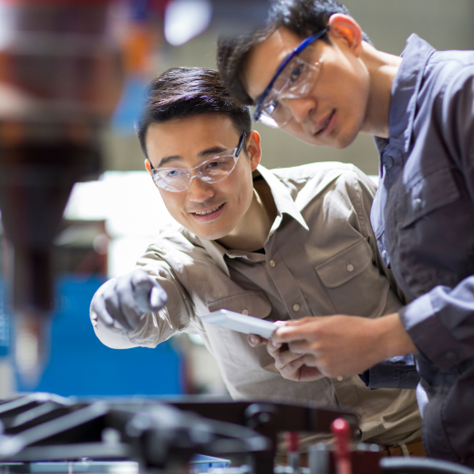
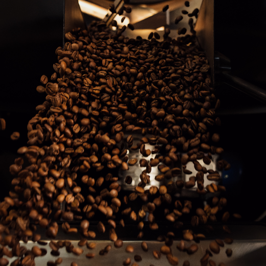

@@include('./pages/includes/head.html', {
pageTitle : '스마트팩토리 컨설팅 | 서비스 - 미라콤아이앤씨',
ogTitle: '스마트팩토리 컨설팅 | 서비스 - 미라콤아이앤씨',
ogDesc: '미라콤아이앤씨의 컨설팅 서비스는 스마트팩토리 최고의 전문 컨설턴트가 제조 현장의 스마트팩토리 구현을 위한 최적의 솔루션을 제공합니다.',
metaDescription: '미라콤아이앤씨의 컨설팅 서비스는 스마트팩토리 최고의 전문 컨설턴트가 제조 현장의 스마트팩토리 구현을 위한 최적의 솔루션을 제공합니다.',
metaKeywords: 'Miracominc,miracom,미라콤아이앤씨,미라콤,MES,스마트팩토리,생산관리,스마트공장,컨설팅,스마트팩토리컨설팅,수준진단,smartfactory',
ogUrl: 'https://miracom-inc.com',
ogImage: '../../assets/images/og/miracom-og.png',
ogType: 'article',
cssPath : '../../assets/css/common.min.css'
})
@@include('../src/pages/includes/header.html', {
type : 'sub-type',
gnb : true,
subDepth: true,
subArr : ['미라콤아이앤씨', '서비스 및 솔루션', '스마트팩토리 컨설팅']
})
서비스 및 솔루션
스마트팩토리 컨설팅
스마트팩토리 최고 전문가들이
제공하는 컨설팅 서비스
서비스 개요
미라콤아이앤씨의 컨설팅 서비스는 스마트팩토리 전문 컨설턴트가 제조 현장의 스마트팩토리 구현을 위한 최적의 솔루션을 제시합니다.
수준 진단 서비스
스마트팩토리 구현 수준 평가 및 성숙도 측정
미라콤 수준진단 모델*을 활용한 로드맵 수립
생산계획/관리, 작업지시, 품질관리, 설비 온라인, 데이터 가시화 등 시스템 활용
수준 평가 및 성숙도 진단
* MESA 11개 기능 기반 미라콤 제조 경험 접목
Master Plan 컨설팅
스마트팩토리 전환을 위한 전략적 계획 수립
공장의 AS-IS 분석을 통한 TO-BE 목표 수립
스마트팩토리 세부 기능, 추진 일정, 기대 효과 등 과제 정의 및 단계별 실행 계획 수립
PI* 컨설팅
스마트팩토리 구축을 위한 표준 프로세스 수립 및 개선
현 프로세스 분석 및 문제점, 개선점 도출
표준화를 통한 혁신적인 프로세스 수립
* Process Innovation (프로세스혁신)
특화 영역 전문 컨설팅
설비 인터페이스/온라인 스펙 사양 설명서 제공
최적의 라인 물류 자동화 레이아웃 설계, 자동화 설비 선정, 창고 자동화 방안 수립 및 컨설팅
필요성
성공적인 스마트팩토리 구축 로드맵 수립을 위하여…
업종 노하우와 전문 지식 필요
유사 업종 컨설팅 및 대형 프로젝트 경험에 의한 성공 모델/노하우
고도화된 기술, 데이터 분석, 자동화 등 다양한 스마트 제조 지식
분야별 스마트팩토리 전문가의 전문적인 조언과 방향성 제시
전략적인 계획 수립 및 구축 방안 필요
컨설팅 이후의 구축/운영까지 연계한 전략적인 계획
기존 공장 확산 및 신공장 구축을 위한 로드맵
미래 성장을 위한 최적의 스마트팩토리 구축 방안
역량/특장점
Success Model
유사 업종 프로젝트 성공 모델 제시
국내외 다양한 기업에 컨설팅과 구축을 연계한 프로젝트 경험 보유
글로벌 기업에 수행한 MES 구축 성공사례 및 노하우 활용
Specialist
분야별 전문인력 보유
제조 현장의 인프라, 설비 온라인, 솔루션 구축, 운영까지 전문 지식을
활용한 스마트팩토리 전문 컨설팅
자동화, 데이터 분석, IoT 등 다양한 기술을 접목한 스마트팩토리 전략 수립
Solution
검증된 방법론 및 진단 Tool Kit 적용
다양한 업종/분야에서 다년간 검증된 컨설팅 방법론을 활용하여 최적의 솔루션 제시
수십년 간 축적된 노하우를 반영한 수준진단 Tool Kit 활용
Strategic Mind
전략적 변화 관리 서비스
현장 혁신 마인드 제고 및 혁신 활동 가이드
고객의 업무수행 능력 향상을 위한 스마트팩토리 구축 성공, 실패사례 공유
미라콤4S 컨설팅역량
미라콤4S 컨설팅역량
Success Model
유사 업종 프로젝트 성공 모델 제시
국내외 다양한 기업에 컨설팅과 구축을 연계한 프로젝트 경험 보유
글로벌 기업에 수행한 MES 구축 성공사례 및 노하우 활용
Specialist
분야별 전문인력 투입
제조 현장의 인프라, 설비 온라인, 솔루션 구축, 운영까지 전 Layer의 전문 지식을 갖춘 스마트팩토리 전문 컨설팅
자동화, 데이터 분석, IoT 등 다양한 기술을 접목한 스마트팩토리 전략 수립
Solution
검증된 방법론 및 진단 TOOL KIT 적용
다양한 업종/분야의 스마트팩토리 컨설팅 수행 경험을
토대로 최적의 솔루션 제시
수십년 간 축적된 노하우를 반영한 수준진단 Tool Kit 활용
Strategic Mind
전략적 변화 관리 서비스
현장 혁신 마인드 제고 및 혁신 활동 가이드
고객의 업무수행 능력 향상을 위한 스마트팩토리 구축 성공, 실패사례 공유
고객혜택
제조 현장의 단계별 최적화를 고려한 맞춤형 청사진 및 ROI 제시
최고 경영자
전문가의 단계별 로드맵 제시로 구축 비용 최적화
스마트팩토리 수준 진단을 통한 발전 방향 제시
투자 비용, 구축 기간, ROI 등을 고려한 투자 계획 수립
생산 관리자
스마트팩토리 전환에 필요한 지식과 기술 습득
현장 특성과 자원을 고려한 실행 계획 및 준비 항목 점검
명확한 업무 진행을 위한 KPI 수립
컨설팅 사례

글로벌 자동차 부품을 제조하는 고객사는 공장별로 상이한 제조 시스템을 사용하고 있어 신규 공장 구축 시 비용이 증가하는 문제가 있었습니다.
해외 신규 공장 확산 프로젝트의 투자 비용을 절감하기 위하여 미라콤에 스마트팩토리 컨설팅을 요청했습니다.미라콤 컨설턴트는 표준 Framework를 정의한 후 시스템 설계와 프로세스 컨설팅 을 진행했고, 체계적인 표준화 컨설팅으로 고객사의 멕시코 공장에 MES를 성공적으로 구축하였습니다.
추후 중국 공장에 MES 확산 시 멕시코 공장에 적용된 Asset을 활용하여 인건비를 55%를 절감하였으며 글로벌 환경 변화에 효율적으로 대응할 수 있었습니다.

종합 식품 기업인 고객사는 글로벌 No.1 식품 리딩 컴퍼니로 성장하기 위한 기반을 마련하고자 미라콤에 스마트팩토리 구축 컨설팅을 요청했습니다. 미라콤 컨설턴트는 고객사의 정보화 수준, 조직구조, 업무 R&R을 진단 및 분석하여 다수의 식음료 고객에 적용한 검증된 ISP/PI방법론으로 최적화된 IT 전략과 운영 모델을 제시했습니다. 또 임직원들에게 스마트팩토리 교육과 최신 자료를 제공하고, 안정적인 시스템 운영을 위한 교육 서비스를 제공했습니다. 체계적인 컨설팅으로 업무 프로세스를 개선하고, IT 투자관리 체계를 만들어 스마트팩토리 구축을 통한 매출 증대 및 수익성 향상의 기회를 모색할 수 있었습니다.
금속/플라스틱 제조 기업인 고객사는 수작업으로 데이터를 관리하여 시스템 기반의 신뢰성 있는 의사결정이 어려운 문제가 있었습니다. 미라콤의 스마트팩토리 전문 컨설턴트가 고객사의 VOC, VOB를 청취하고, 프로세스 및 시스템을 분석하여 스마트팩토리 추진 방향을 정의했습니다.
이를 통해 MES 도입 후 효과에 대한 사전 예측 및 검증 시스템을 통해 제조경쟁력을 극대화할 수 있는 통합 생산 체계를 제안했습니다. 신뢰성 있는 사전 컨설팅을 바탕으로 스마트팩토리를 구축하여 공장 효율화를 실현해 생산성과 수율이 향상되는 성과를 볼 수 있었습니다.
글로벌 식품 기업인 고객사는 미라콤 컨설턴트의 스마트팩토리 정보화 전략 계획을 통하여 F&B 선진사와 동등한 수집, 제어, 분석, 운전 자동화의 단계적 구축과 IOT/빅데이터 등 신기술 도입을 통한 추가 개선 방안을 검토했습니다. 미라콤은 식품 산업의 신기술 적용 방안과 정보 수집 자동화로 사업과 IT부문의 역량을 강화할 수 있는 방안을 제시했습니다. 이를 통해 민첩한 경영전략 실행을 지원할 수 있게 되었고, 스마트팩토리 구축을 통한 업무 개선과 효율화로 매출 증대 및 비용 절감 효과를 실현할 수 있게 되었습니다.